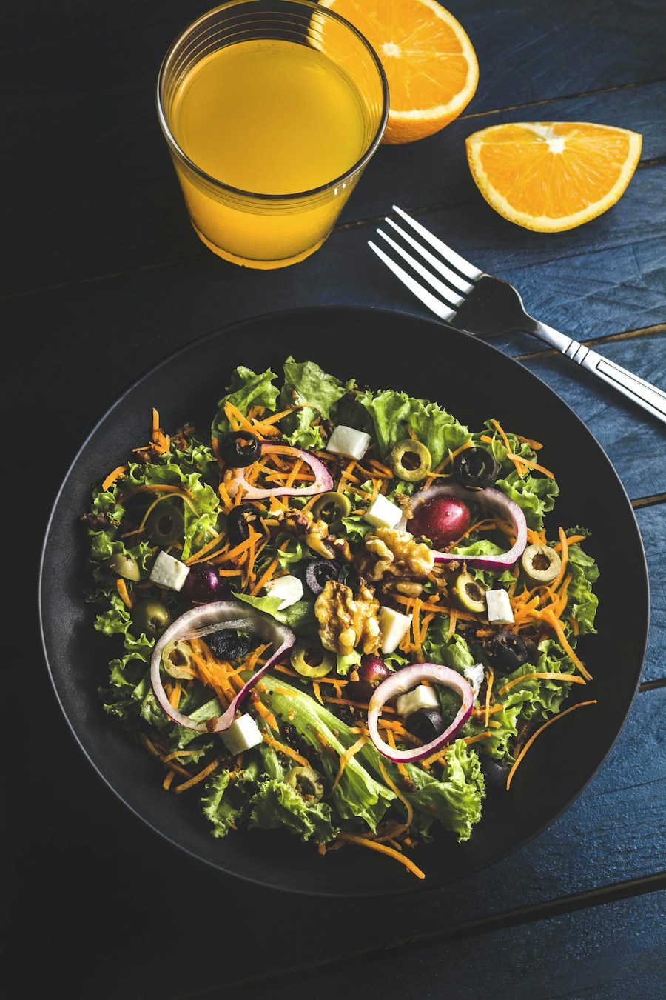
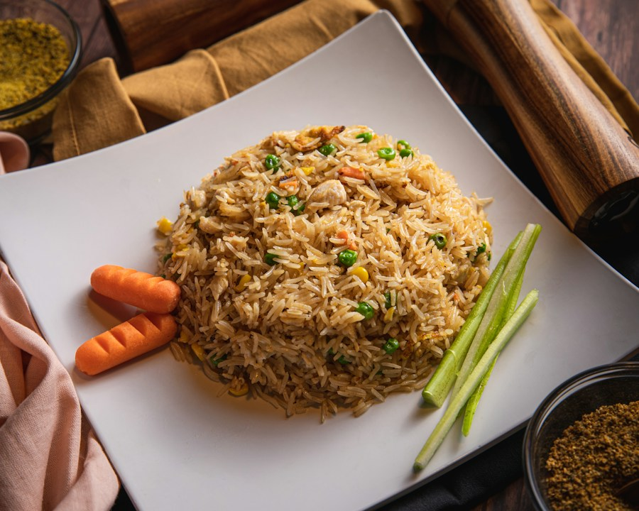
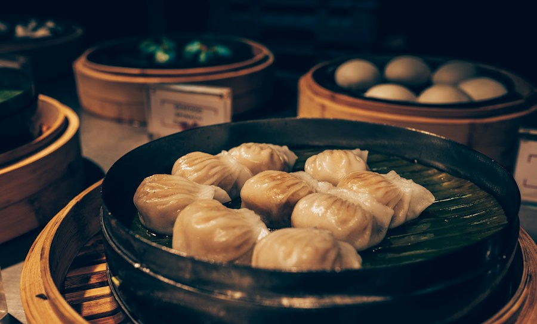
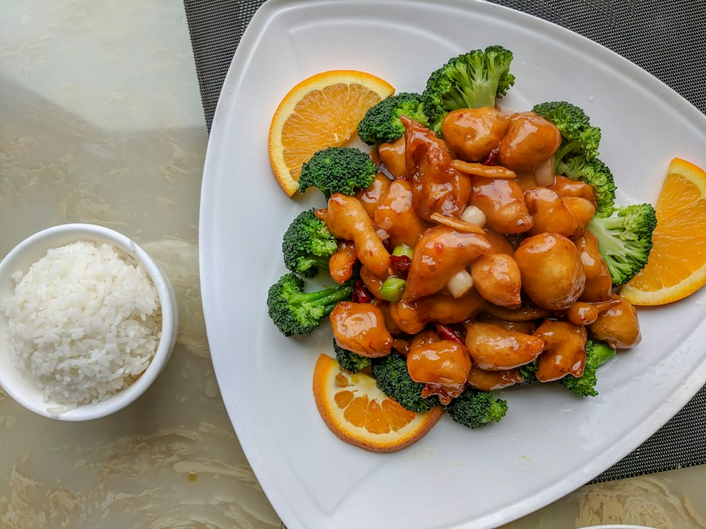
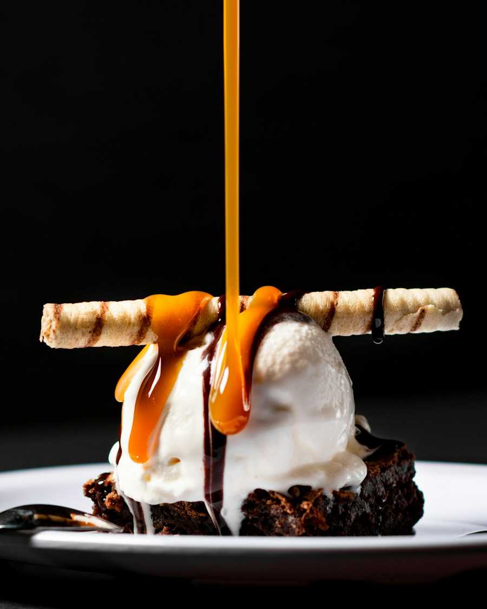

主厨推荐
主厨推荐
汤 · SOUP01
松茸菌香鸡汤
云南香格里拉松茸 · 散养土鸡 · 山泉水慢炖四小时
¥128OUR PHILOSOPHY
清晨从山里出发的笋、菌与野菜，跨越晨雾来到灶台。 我们只做一件事：尊重食材，认真做饭。
认识山野
主厨推荐
云南香格里拉松茸 · 散养土鸡 · 山泉水慢炖四小时
¥128
鲜山椒 · 秋葵 · 发酵豆酱
¥48
鲜牛肝菌 · 五常米 · 自制腊味
¥88
手工鲜肉馅 · 汉源花椒 · 秘制红油
¥58
黑猪战斧 · 山野香料 · 炭火慢烤
¥168
金桂 · 糯米酒酿 · 柠檬奶油
¥42OUR SPACE
原木、粗陶、微光，围绕一张张餐桌自然生长。 这里没有多余的装饰，只留下食物、交谈， 以及窗外缓慢流动的城市。
RESERVATION
周末座位有限，建议提前 1—2 天预订。8 人以上聚餐请致电 028-8556 1226。
FIND US